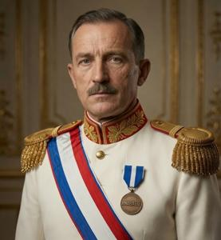
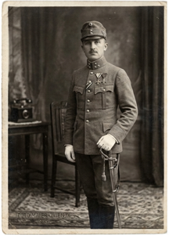
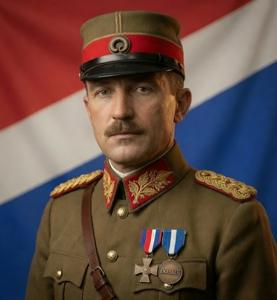

King Drogan
{kind=link}

Drogan Martonov Glovacz (Zgurian; Deglian: Drogan Martonov Glovač; Glagolitic: ⰄⰓⰑⰃⰀⰐ ⰏⰀⰓⰕⰑⰐⰑⰂ ⰃⰎⰑⰂⰀⰝ; 1888–1940), also known as King Drogan the First (Krol Drogan Prjevy), was an Upper Pannonian military officer, dictator, and the first king of Upper Pannonia. He ruled the country from 1931 until his assassination in 1940 — nine years that eliminated parliamentary government, suppressed all organized opposition, and rebuilt the economy and army around the Hungarian invasion that he anticipated but failed to prevent.
Born in Austrian Galicia, he served in the Austro-Hungarian army, was captured on the Eastern Front in 1916, and joined the Pannonian Legion from a Russian POW camp. He assumed command of the Legion in 1918 and led it overland through Yugoslavia to Vronovica in early 1919 — a march his regime later mythologized as the Pannonian Anabasis. He suppressed a Communist insurrection that year, spent the 1920s building the National Empowerment Movement into a mass political force, and seized power by force on 1 September 1931. The Legislative Assembly was dissolved, the left was eliminated, and a one-party state was consolidated within two years. He was enthroned as King Drogan I on 1 September 1934; his consort, the actress Etelka Baumgarten, was enthroned as Queen Adele in 1936. Through the late 1930s Glovacz directed an extensive military buildup and pursued diplomatic backing wherever he could find it — overtures to Mussolini, repeated letters to Hitler — without result. Hungarian forces crossed the border on 10 September 1940. His senior generals sabotaged his orders and issued unauthorized surrender orders; Glovacz was shot in the palace during the night of 10–11 September. Whether it was done by his own hand or not, has never been established.
- 1 Early life and career (1888–1914)
- 2 World War I (1914–1916)
- 3 Pannonian Legion (1916–1920)
- 4 Suppression of the Pannonian Soviet Republic (1919)
- 5 Independence questioned (1920)
- 6 National Empowerment Movement (1922-1929)
- 7 Seizing power (1931)
- 8 Policies of the dictatorship period (1931-1933)
- 9 Personal life
- 10 Monarchy (1934)
- 11 Internal policy (1934–1940)
- 12 Foreign policy (1931–1940)
- 13 Fall of the First Kingdom (September 1940)
- 14 Legacy
Early life and career (1888–1914)
Drogan Glovacz was born in 1888 in Przemyśl, a garrison town in Austrian Poland, where his father Marton, a Deglian, served as an artillery officer. His mother Katalina was Zgurian. He attended the Theresian Military Academy in Wiener Neustadt and was commissioned in 1909 as Leutnant in Infantry Regiment Nr. 77, a Galician unit garrisoned in Sambor. By 1913 he had risen to Oberleutnant. He later claimed lifelong Pannonian patriotism; his service record suggests nothing of the kind.
World War I (1914–1916)
{kind=link}

In August 1914, Regiment Nr. 77 deployed to Galicia. Glovacz fought in the opening campaign, retreating with the Austro-Hungarian forces following the fall of Lemberg in September. He took part in the Gorlice-Tarnów offensive of May 1915, the combined German-Austro-Hungarian push that drove Russian forces hundreds of kilometers east. He was promoted to Hauptmann and awarded the German Iron Cross in its aftermath. The Brusilov Offensive of June 1916 destroyed the regiment's position near Lutsk. Glovacz was taken prisoner on 28 June 1916, one of some 400,000 Austro-Hungarian soldiers captured in that campaign.
Pannonian Legion (1916–1920)
From a POW camp near Penza, Glovacz was recruited into the Pannonian Legion that autumn. In early 1917, he arrived at the Caucasian front. He commanded a battalion under Colonel Antal Zsigmondov through the attritional operations southeast of Erzurum until the Erzincan armistice of December 1917. Then the Legion remained for a year in Transcaucasia serving the Georgian Democratic Republic as an auxiliary security force along the Kutaisi-Batumi corridor. Years later, Glovacz blamed Zsigmondov for this decision, denouncing his preference for comfort over risk.
In August 1918, Zsigmondov was killed in a patrol skirmish near Kutaisi. Glovacz assumed command and soon terminated the Georgian arrangement. After the Armistice of Mudros opened the Turkish Straits in October, British vessels carried the Legion to Trieste. The Kingdom of Serbs, Croats and Slovenes (SCS) denied railway access, hostile to Pannonian independence. Glovacz marched overland: four firefights with SCS border detachments, then a five-day midwinter crossing of the Nexozsi Vrjexi range. Six were killed; five died of exposure. The Legion entered Vronovica in late February 1919. The march was subsequently named the Pannonian Anabasis and became the central myth of the Glovacz regime, progressively embellished until it bore little resemblance to events.
Suppression of the Pannonian Soviet Republic (1919)
The 1919 Bolshevik insurrection gave Glovacz his first exercise of force within Pannonia. Inspired by Béla Kun's Hungarian Soviet Republic, Communist activists rose in Vronovica's Zadravska industrial quarter and the northern mining towns Novokopy and Szamenik in April. Three Third International delegates — Erwin Bach, Raphael Schwach, and Erzsebet Karácsony — coordinated the rising and proclaimed a Pannonian Soviet Republic. The Hungarian minority supplied irregular volunteers and weapons from across the border. The Legion suppressed the rising sequentially — cross-border formations, then mining towns, then the Zadravska factories — through May and into summer. Military tribunals produced executions numbering in the dozens; Bach, Schwach, and Karácsony were among those shot. The broader labour movement was left intact, ensuring the Communist underground would remain a live threat.
Glovacz's subsequent propaganda reframed the events as the defeat of a full Hungarian military invasion backed by treacherous domestic minorities: Hungarians, Germans, and Jews. The claim was not without basis: ethnic minorities were disproportionately represented in the Communist movement, and the three principals of the Pannonian Soviet Republic were, in fact, a German, a Jew, and a Hungarian. The Glovacz's propaganda nevertheless exaggerated the extent of foreign involvement; the more balanced interpretation served him less well.
By 1920 the Legion's reputation — and Glovacz's own — had risen to a level the civilian government could no longer tolerate. Prime Minister Bluxa moved carefully: in April 1920, Glovacz was dispatched on a military diplomatic mission to Paris and London. During his absence, the government ordered the Legion merged into the Pannonian National Army (PNA). Glovacz returned to a fait accompli. A refusal would have required a coup he was not yet positioned to attempt; he accepted, took the promotion to General, and assumed the post of head of military education — a role with prestige and no troops. The informal networks of former legionaries survived the dissolution intact.
Independence questioned (1920)
The post of head of military education came without troops but with an office, a staff, and access to every secondary school and barracks in the country. Glovacz's removal from political life was, in practice, an asset. While the Republic's parties traded accusations in the Legislative Assembly, he remained above the quarrel, and former legionaries treated him as their natural leader regardless of rank.
The country's formal status remained undecided through 1919 and 1920, owing to the SCS's position. At the Versailles Conference and after, the Belgrade delegates insisted that Upper Pannonia should become part of the SCS on ethnic and cultural grounds. The League of Nations pressed for a plebiscite, which was conducted in October 1920 with three options: reunite with Hungary, unite with the SCS, or remain independent.
Besides the Hungarian minority and a small elite faction of pro-Hungary madjarony, nobody wanted to return to Hungary, but union with the SCS was a real option. The ruling Pannonian National Union headed by Dr. Zdjeslav Bluxa was Zgurian-dominated, its senior appointments controlled by a small circle of interconnected families. Deglian political leaders, skeptical that independence would change this arrangement, largely backed union with the SCS as a counterweight. Glovacz, half-Deglian by birth, campaigned for independence in Deglian-majority towns and spoke occasionally in his father's dialect. Legion veterans turned up at his meetings and stood in the hall in informal order. His ethnic background made the independence argument harder to dismiss. The 1920 plebiscite returned a strong pro-independence majority.
National Empowerment Movement (1922-1929)
{kind=link}

In 1922, Glovacz published "Pannonia and Its Enemies" (Pannonia i jeju vrozi). The book named three enemies. Hungary was the "old wolf," still dreaming of restoration. The Kingdom of Serbs, Croats and Slovenes was the "young lion," pursuing Pan-Slavic unification at Pannonia's expense. The "hidden serpent" was domestic: Communists, assorted leftists, and national minorities corroding the state from within. The prescription was a strong leader and what Glovacz called "popular monarchy" — a crown resting on collective national will rather than parliamentary arithmetic. The book sold out within six months and a second edition followed.
The organizational work had begun before the book appeared. Through his position in military education, Glovacz extended his networks into civilian youth formations — the nucleus of the National Empowerment Movement (Dviga Drjezsavnoj Zmoczi, DDZ). The formations were modelled on Italian fascism, which Glovacz openly admired, and organized around Catholicism, monarchism, sport, and discipline. Members — the zmocznjaki, "empowerers" — wore white shirts, black trousers, black suspenders, and red-and-blue ties; the suspenders gave the movement its colloquial name, czerny pomoczi. Their salute was a right fist clenched and held horizontally across the chest, and their motto: "Forward — to glory!" (Napred — do slavy!) The movement's emblem was the Glagolitic letter B (Ⰱ) referring to boj (fight), budroscz (vigour), and budlo (future). Leadership positions went to Legion veterans. By 1924, the zmocznjaki were drilling publicly in city parks on weekends. The Vronovica city administration twice issued orders banning the drills; both were ignored.
By 1926, DDZ had formalized as a political party and won twenty-two seats in the Legislative Assembly. The mainstream parties dismissed this as a protest vote. When Glovacz delivered his maiden speech — reiterating the "three enemies" framework and calling explicitly for a monarchist constitution — he was jeered by the Social Democrats and received in cold silence by the PNU. Only the Christian Social Party, whose electorate overlapped with DDZ's on anti-communism and Catholic social values, listened with any interest. That overlap would matter later.
The Republic's parliamentary arithmetic made governing nearly impossible: no stable majority existed. Coalitions between the PNU, the Christian Social Party, and the Agrarian Union lasted months at most before collapsing over the budget or cabinet appointments. In a bad year there were three elections. In 1929 the Depression arrived. Coal mines in Szamenik and Novokopy stopped; unemployment reached thirty percent within eighteen months. A strike at the Zadravska factories in October 1930 ended when police fired on the crowd, killing three workers. The PNU and Social Democrats spent the following weeks assigning the deaths to each other. DDZ organized the funerals, provided the pallbearers, and said nothing inflammatory in public. Two more elections followed in 1931 with no decisive result.
Seizing power (1931)
The August 1931 elections produced the same result as every election before them: no majority. DDZ took twenty-two percent of seats; the Christian Socialists, nineteen; a scatter of smaller right-wing parties, five. The PNU, Social Democrats, Agrarians, and smaller parties divided the remainder, leaving no grouping capable of forming a government.
On 1 September 1931, the Legislative Assembly met in ordinary session. Armed DDZ formations entered the building during the morning sitting, took positions at the chamber doors, and sealed the galleries. Glovacz appeared before the floor and demanded appointment as Prime Minister and Supreme Commander with extraordinary powers. MPs who objected aloud were removed from the chamber and held in the building's lower floors. Those who remained voted in his favour; the tally was later established to have been manipulated. President Zlotan Czigraj — a PNU elder whose constitutional function was ceremonial — promoted Glovacz to Marshal and signed the enabling decrees. He was not in a position to refuse.
Glovacz declared martial law that afternoon. The Legislative Assembly was dissolved. Censorship boards were installed at every newspaper and radio station within a week. A new cabinet followed: DDZ held the ministries of the interior, defence, and finance; the Christian Social Party received education and agriculture. The arrangement was described as a national unity government.
The left's response was immediate and violent. Barricades went up in the Zadravska quarter; the mining towns saw armed clashes between zmocznjaki and trade union militias. Glovacz deployed PNA regulars alongside DDZ units and suppressed the risings by October. Left-wing parties — the Social Democrats, the Communists, the Anarchist Federation — were formally banned. Their armed wings were disarmed, their funds seized, their offices converted to DDZ branches. Strike action was prohibited by decree. Several hundred activists were imprisoned in the first months.
Policies of the dictatorship period (1931-1933)
Economy
Economic policy moved toward state direction. A public works programme — road construction, flood defenses along the South Drava, and the extension of the railway branch to Szamenik — absorbed several thousand workers within eighteen months. Tariffs were raised on imported manufactured goods; production quotas were assigned to the mining industries and the Vronovica metalworks. A state agricultural bank, established in early 1932, extended subsidized credit to smallholders at rates the private banks had ceased to offer. The Ministry of Finance resisted outright nationalization of the banking sector; the resulting hybrid was less coherent than Glovacz preferred and more functional than his critics expected. Unemployment fell sharply by mid-1932 — enough to make the argument that the coup had been worth the disruption.
Religion
The concordat with Rome was less a negotiation than a declaration of intent. Glovacz met Bishop Rudecki personally in October 1931 and the concordat was initialled by December. The Church recovered influence over the school curriculum and funding for its charitable network; in return it gave the regime formal Vatican recognition and a pastoral letter read from every pulpit in the country, blessing the new order in terms that carefully avoided the word "coup." The Cathedral of SS. Cyril and Methodius — designed by Isztvan Koczar and under construction since the late 1920s — was consecrated in 1932 in a ceremony Glovacz attended in Marshal's uniform. Bishop Rudecki's elevation to Cardinal in 1933 was, in Glovacz's telling, a recognition of Pannonia's place in Christian civilization; in Rome's, a prudent investment in a stable government.
Language and identity
Language enforcement moved faster than political reform. The "language purification" (slovny poczist) was enforced legally: loanwords were banned from official use, and the state curriculum required Pannonian Slavic exclusively. Hungarian and German were removed from schools, theatres, and publications. In other respects, national minorities were not targeted: mixed marriages remained legal, religious practice was unimpeded, and no racial legislation was introduced. The regime's nationalism was linguistic and political, not biological.
The distinction between Zgurian and Deglian was irrelevant to Glovacz: both were Pannonians speaking the same language, and his nationalism was organized on that premise. Any sign of Zgurian or Deglian particularism that ran counter to common Pannonian identity was suppressed, and both competing Latin alphabets were banned. Only Pannonian Glagolitic was permitted in Pannonian-language publications and official documents.
Political struggles
Within DDZ itself the coup had opened a rift. Legion veterans who had followed Glovacz since 1919 accepted that power required management. A younger faction, radicalized through the movement's youth formations in the mid-1920s, had expected something more thorough. They wanted the madjarony — Hungary-sympathizing nobility — stripped of their estates. They wanted the Christian Socialists excluded from government. They wanted acceleration. Glovacz had no intention of providing it. The confrontation with the Church or old nobility was not on offer. He managed the radical wing with ceremonial appointments within the DDZ party apparatus and larger parade grounds for the zmocznjaki. They remained loyal and discontented.
In early 1933 a new wave of repression began. The Reichstag fire in February had demonstrated the utility of a security crisis, and contemporaries noted the parallel; whether Glovacz required a pretext or simply found a convenient moment is unclear. Through February and March, DDZ militants conducted targeted killings across Vronovica, Novokopy and Szamenik — not arrests, but executions carried out at night, with bodies left at union halls and party offices. The victims were communist organizers, Social Democratic district committee members, and a smaller number of anarchists. Estimates range from two hundred to five hundred dead; no records were kept, or they were destroyed. Those who could fled: to Austria, to Yugoslavia. Severyn Gowbka, the last surviving senior figure of the Communist Party, was nineteen years old when he crossed into Austria in March and eventually reached Moscow.
The repression cleared what remained of organized left-wing opposition. It also served a secondary function: it bound the zmocznjaki in collective guilt. Men who had participated in the killings could not afterward align with any other political force. The DDZ rank and file was now, irreversibly, Glovacz's.
Personal life
As early as 1926, Glovacz published an "Exhortation for the Pannonian Youth" (Nastava pannonskoj mlodji), in which, among other advice, he praised sexual abstinence and virginity. He did not follow this advice himself.
Glovacz had been a widower for over a decade. His first wife Marija had died of typhus in the winter of 1920, a year after the Legion's entry into Vronovica — leaving no children. Through the years of political organizing he remained alone, attributing this variously to asceticism, the absence of available time, or the total self-dedication to the beloved country.
In fact, Glovacz had multiple concealed love affairs. Handsome, charismatic, famous, and powerful in his thirties, he naturally attracted women and did not hesitate to take full advantage. He avoided lasting attachments, which could cause trouble, and preferred episodic affairs without obligations.
He met Etelka Baumgarten, a star of the first Pannonian sound film Dawn over the Drava, soon after his 1931 coup. Their relationship, conducted privately through 1931 and into 1932, became an open secret in the city and turned into something more serious than his previous brief affairs. Glovacz announced the marriage in early 1933 — concurrent with the bloodiest months of his regime. The social scandal and its resolution are covered fully in Etelka's own biography.
Monarchy (1934)
On 1 May 1934, Pannonian citizens voted in a constitutional referendum. The question concerned the introduction of monarchy, and the options were:
-
YES, as a true Pannonian patriot and a loyal supporter of Supreme Commander Marshal Glovacz I vote for his enthronement as King for the good of our nation
-
NO, as a treacherous enemy of Upper Pannonia I want this country to be weak and headless, and therefore vote against the enthronement of Supreme Commander Marshal Glovacz whom I hate and wish to destroy
Given such formulations, and the fact that voting was conducted in the open without any booths, nobody should be surprised that the population voted for monarchy almost unanimously. What is surprising is that 105 ballots were nonetheless cast against. The fates of those 105 are unknown. Curiously, in a 1946 opinion poll — there were still opinion polls then — 25% of respondents claimed to have voted "no." In any case, the new monarchical constitution was approved by parliament, and on 1 September, exactly three years after the 1931 coup, King Drogan I was enthroned by Cardinal Rudecki in the Cathedral of SS. Cyril and Methodius. His wife's enthronement as Queen Adele in 1936, and her proclamation as heiress in the absence of children, completed the monarchical system.
Internal policy (1934–1940)
From 1934, policy in every domain bent toward war preparation. In 1935, King Drogan published his memoirs, Forward — to Glory!; the epilogue stated the position plainly: a new European war was coming, and for Upper Pannonia, it would be a war for survival.
The army's expansion consumed an increasing share of the budget. Infantry divisions were reorganized and their surplus manpower directed into new artillery and armored formations. Domestic arms production was limited: a state munitions plant opened in South Vronovica in 1936, capable of producing artillery shells and small-arms ammunition. Everything else was imported. Procurement contracts with Czechoslovakia between 1934 and 1937 delivered Škoda field guns, ZB-26 light machine guns, and a consignment of light tanks; the air arm received biplane fighters through Austrian intermediaries. Czech and Austrian suppliers were the natural choice — Austro-Hungarian-era compatibility in parts and training made the transition manageable, and the required diplomatic channels existed, if not for long. The total stockpile was at no point adequate for more than a few weeks of sustained operations.
The military program required a corresponding economic transformation. From 1935, the Ministry of Finance directed credit allocation toward defense production, railway extension, and road construction. Labor unions, already subordinated by decree after 1931, were brought under unified state administration. The result was a semi-planned economy organized around a single strategic objective.
Political consolidation ran in parallel. In 1936, even the parties that had cooperated with the regime — the Christian Social Party, the Agrarian Union — were dissolved. A one-party state was formalized. The DDZ was itself subordinated to the monarchy in practice; Drogan had moved beyond needing a party base.
These preparations were not without foundation. The external pressures on Upper Pannonia by the mid-1930s gave the militarization a logic its critics were unable to deny.
Foreign policy (1931–1940)
The republican inheritance (1920–1931)
In the years following the 1920 plebiscite, the Upper Pannonian Republic concluded bilateral friendship and non-aggression agreements with Czechoslovakia and Romania and normalized relations with the Kingdom of Serbs, Croats and Slovenes (SCS) — effectively aligning itself with the Little Entente. The logic was straightforward: the Entente existed to contain Hungarian revisionism, and Hungary was UP's principal threat. The arrangement was complicated by the position of the SCS, which had officially recognized Pannonian independence in 1920 but still regarded it as a historical mistake and aspired toward annexation.
Vronovica and Belgrade maintained formal diplomatic relations while sustaining mutual suspicion at every level below them. The Entente provided a nominal anti-Hungarian umbrella; in practice it delivered little, since neither Prague nor Bucharest would antagonize Belgrade on UP's behalf.
Failed overtures (1931–1938)
Glovacz had no ideological sympathy for the arrangement and no intention of relying on it. His DDZ movement had been modeled explicitly on Italian fascism; he admired Mussolini personally, and from 1931 onward he sought a more robust alignment on ideological grounds.
In autumn 1932 he traveled to Rome. Mussolini received him with the warmth reserved for ideological creditors. They posed for photographs, discussed Yugoslavia over dinner, and Glovacz put the anti-Yugoslav case with some energy. Mussolini listened. Nothing was committed to paper. Glovacz returned to Vronovica with a signed photograph and a general sense that something had been achieved. Eighteen months later, Mussolini signed the Rome Protocols, formally aligning Italy with Austria and Hungary. UP did not appear in any version of the document.
The Italian move brought little gain and antagonized Czechoslovakia, which had been among UP's closest partners under the First Republic. That friendship had rested on shared Slavophile ideology, mutual antipathy toward Hungary, and the parallel histories of their respective Legions. Under Glovacz, and especially after his Rome visit, relations with Prague cooled.
The one congenial foreign relationship of the period was with Austria. Glovacz visited Vienna and found in Dollfuss, and later Schuschnigg, something close to a peer: Catholic, authoritarian, anti-communist, hostile to the parliamentary disorder. The friendship was real and entirely useless: Austria was a country awaiting annexation, not a protector.
Britain and France had helped bring Upper Pannonian independence into existence and had maintained the arrangements that sustained it. Good relations with both powers continued through the 1920s and into the 1930s; British credits had supported economic recovery and contributed to military modernization. Drogan drew on those credits without illusion: he understood that neither London nor Paris would intervene if Hungary moved to annex the country.
When the Anschluss came in March 1938, Drogan lost his only ideological peer abroad. Italy was locked into the Rome Protocols. Czechoslovakia had ceased to be a viable state, and its subsequent occupation confirmed that no help was to be expected from France or Britain.
The only power capable of restraining Hungary from annexing Upper Pannonia was the power that had just annexed Austria unrestrained. Drogan wrote to Hitler.
Courting Germany (1938-1940)
The letter of spring 1938 — drafted in German, the language his own decrees had banned from Pannonian schools and publications — expressed Drogan's admiration for German national renewal and proposed that a Pannonian-German understanding could serve both parties' regional interests. A polite reply came from the Foreign Ministry.
The next letter followed the First Vienna Award of November 1938, which transferred southern Slovak territories to Hungary. The tone was more urgent: Hungary was being rewarded for revisionism it had contributed nothing to earning; Upper Pannonia had been a stable, orderly state that asked only to be noticed. A vague reply arrived, again from the Foreign Ministry, again noncommittal.
The following letter was sent in April 1939, three weeks after Germany occupied the remainder of Czechoslovakia. Drogan dispensed with hedging. Upper Pannonia could offer what Hungary could not: a willing client on Germany's southern flank, without territorial ambitions, without the instability that Hungarian revisionism would introduce into any German-sponsored order. Hungary was a liability; UP was leverage. No reply came.
When war broke out in September 1939, UP declared neutrality; British and French diplomatic missions remained in Vronovica. In letters sent to Hitler that autumn and into 1940, the king offered to enter the Axis and place Pannonian territory at German disposal for whatever purpose was required. No reply came.
In August 1940, Germany and Italy convened the Second Vienna Award, arbitrating Romanian-Hungarian territorial disputes. Northern Transylvania passed to Hungary. As part of the same round of German-sanctioned territorial settlements, Hitler approved the Hungarian annexation of Upper Pannonia — dismissing the country as "a comical nonsense," as Horthy recalled in his post-war memoirs. Hungarian forces crossed the border on 10 September 1940.
Fall of the First Kingdom (September 1940)
The fifth column
Hungary's rapid advance owed much to organized pro-Hungarian sentiment within the officer corps and old nobility. In those circles, Pannonian independence had never commanded genuine loyalty. German and Hungarian cultures were regarded as civilized and noble; Slavic culture as low, vulgar, and peasant. The entire Slavophile national narrative was perceived as an intelligentsia fantasy. Glovacz's monarchy was seen as a clownade; his marriage and the subsequent enthronement of a former actress with Jewish roots as an outright humiliation.
Nostalgia for Greater Hungary was widespread among them, and Horthy's expansionism commanded real admiration. The madjarony could see clearly that UP was to be annexed. They considered armed resistance to be, first, pointless bloodshed, and second, a threat to Upper Pannonia's future standing within a restored Hungarian state: the more resistance, the worse the eventual status.
Drogan understood these attitudes perfectly. But he could not move against the madjarony as he had moved against the left: they included senior generals whose expertise was indispensable to his militarization program. He planned to remove them gradually, replacing the old guard with younger loyal officers. He did not have the time.
Invasion and regicide (10-11 September 1940)
Hungarian forces crossed the northern border at 06.00 on 10 September. Lt. General Gorondy-Novák's 2nd Army advanced on two axes: the V Corps drove south through the hill country toward the South Drava valley, while the Mobile Corps under General Feketehalmy-Czeydner — built around the 1st Cavalry Brigade and the 2nd Motorized Brigade — wheeled southwest toward the river crossings upstream of Vronovica.
King Drogan spent the day of 10 September in the General Staff building in Vronovica, issuing orders. He ordered the northern sector to hold at the Szamenik and Novokopy approaches, authorized counterattack plans, and directed reinforcements toward the threatened river crossings. Most of these orders were not transmitted, or were transmitted in altered form. General Balnoszi, head of the Pannonian General Staff, and General Smjeglo, commander of land forces, controlled the communications apparatus; what reached the field was not what the King had signed.
Two formations acted on the original orders before the interference took effect.
Colonel Markov, commanding the Szamenik Infantry Regiment, received Drogan's first directive and acted on it. His regiment held the southern approaches to Szamenik through the morning, engaging the V Corps's leading column and destroying its advance artillery. The regiment was encircled and overwhelmed by early afternoon. Markov was killed at his command post at approximately 14.30. He was proclaimed a national hero after liberation in 1945; his name was given to the main square in Szamenik.
Lieutenant Colonel Rybnik, commanding the 1st Border Regiment "Vlokodlaci," withdrew his battalion into the Nexozsi Vrjexi on Drogan's order, to preserve a coherent force. He carried enough ammunition and supplies for a sustained campaign. The monarchist Resistance organized around his unit through 1941–1944. In November 1945, the Communist government arrested Rybnik. He was executed in January 1946. His name does not appear in any Socialist-era account of the resistance.
Balnoszi issued a unilateral cease-fire order to most border sector commands before 09.00 — without the King's authorization and without a formal capitulation. Most formations complied. By early afternoon, the field was effectively decided.
The Mobile Corps reached Visztica by 17.00. The bridge garrison, under Smjeglo's orders, was disarmed without resistance. Feketehalmy-Czeydner's sappers crossed the South Drava upstream of the bridge and secured the south bank; by 20.00, motorized units were moving east along the left bank toward Vronovica. The encirclement was not yet closed, but it was legible.
The capital itself was a different situation. DDZ Guards held the whole of Vronovica — several thousand men deployed at street level, in fortified positions along the main roads, and around the palace. They took no orders from the General Staff. Their chain of command ran to the King alone. Had he remained alive and in authority, Vronovica would have required house-by-house reduction. The Hungarians understood this; Gorondy-Novák's forces on the left bank were advancing cautiously, probing rather than committing. A determined urban defense by troops loyal to their King was still a real prospect as evening fell.
Smjeglo's communications with the palace ceased during the afternoon. Drogan knew, or had concluded, what was happening in the General Staff.
Queen Adele departed Vronovica by car at approximately 21.00, with a four-vehicle escort and the working files of the state secretariat. She later stated that the King had personally authorized her departure and charged her with forming a government in exile. No corroboration was ever found.
Drogan spent the night of 10–11 September in the palace's eastern wing. He saw no one after 23.00. At some point before dawn, he was shot once in the head with a service pistol.
Many versions of what happened exist.
The first, announced officially next morning, was suicide. Almost no one accepted the explanation. A man who still had thousands of fanatically loyal troops in position throughout the capital, and who had spent the day issuing orders did not, in most people's judgment, match this profile.
The second version, which has achieved the widest subsequent acceptance, holds that the DDZ Guards killed the King. Men who had dedicated their lives to his person, watching the regime collapse around them, resolved that he would not fall into Hungarian hands. The guards on duty that night were never publicly named. None came forward afterward.
The third body of accounts — numbering in the dozens within a decade, proliferating with each subsequent crisis in Pannonian politics — assigns the killing variously to the madjarony, to Hungarian military intelligence, to Soviet agents, to Cardinal Rudecki's circle, and to Queen Adele. None has a documentary basis.
At 06.30 on 11 September, the Balnoszi and Smjeglo joint proclamation stated that King Drogan had died by his own hand, that Queen Adele had abandoned the country, and that continued resistance would result in unnecessary bloodshed. All formations were ordered to surrender in good order to the nearest Hungarian command. The DDZ Guards, whose loyalty was to the King and not to the generals, stood down. Hungarian forces entered Vronovica that afternoon. The First Kingdom was over.
Legacy
Drogan Glovacz held a small country together through the Depression, organized its economy around military production, turned a dysfunctional democracy into a functional dictatorship — and then watched that functionality prove insufficient. He countered violence from the left with worse violence from the right, only to find that the threat which eventually ruined his country lay even further to the right.
The Communist government obliterated the First Kingdom from official history. Fiercely anti-Communist, Glovacz was certainly evil, but the Hungarian invaders were evil as well; this complicated the propaganda message and was therefore covered by silence.
For post-1990 Zgurian and Deglian nationalist narratives, Glovacz is equally inconvenient. As a nationalist strongman, he was sympathetic; as a leader who insisted on Pannonian unity and tried to wipe out Zguro-Deglian differences, he was not. Some Droganist aesthetics are borrowed by the spremnik subculture without copyright notice, but not the ideological content. For those few liberal Pannonians who attempt to overcome the Zguro-Deglian split and reconcile the two ethnicities, Glovacz is a tyrant and a perfect example of how not to build national solidarity. Even his daughter Ljudmila publicly denounced his policies. In short, Drogan Glovacz is the figure that the Upper Pannonian national memory has long tried to eradicate from itself.
Categories: Authors, Interbellum era, Monarchs, People, Politicians